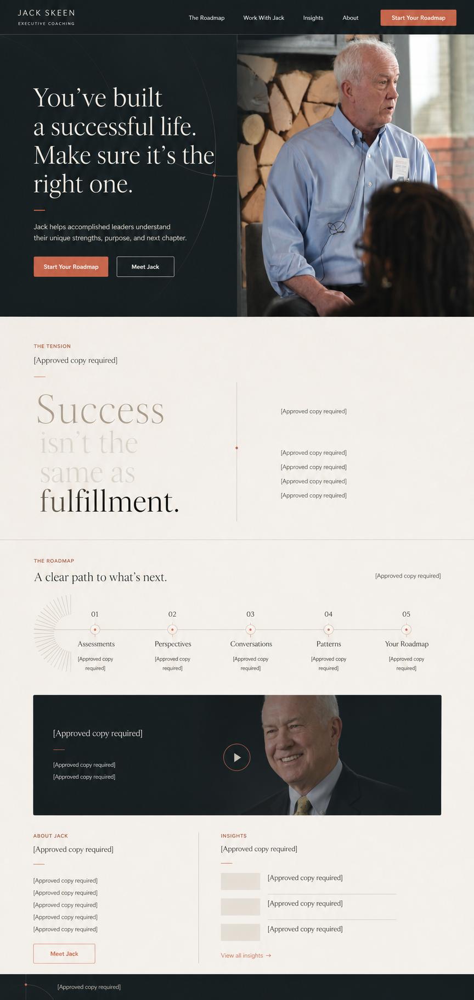
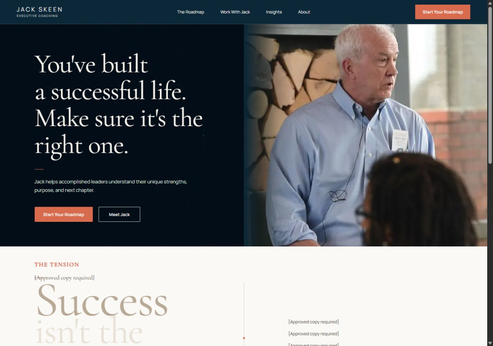
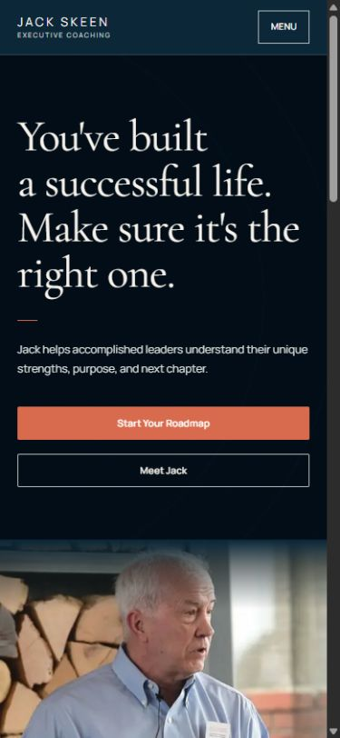

A source-controlled alternative to Figma: the selected visual, responsive implementation evidence, final tokens, and page decisions live together here for review.
01 · Source of truth
Selected editorial direction


KeepHero image, split composition, large serif hierarchy, light reading surfaces, minimal controls, and restrained geometry.
AdjustMove the dark field toward a deeper Atlantic blue and brighten the paper field. Keep clay as the small action accent.
PrioritizeThe problem and the clarity offered by the Roadmap. Process detail supports the decision later in the page.
WithholdUnsourced proof, credentials, testimonials, prices, and integrations remain visibly unavailable.
02 · Palette
Deep blue, warm light
Atlantic#0B2738
Depth#071E2C
Paper#FBF9F5
Soft#F1EDE6
Ink#332F2B
Clay#D86A4D
03 · Responsive evidence
One hierarchy, two compositions

04 · Component rules
Calm, editorial, functional
| Surface | Decision | Avoid |
|---|---|---|
| Typography | Cormorant Garamond display; Manrope body and UI. | Heavy sans headings, excessive uppercase. |
| Buttons | Squared clay primary; outlined inverse secondary; 44px touch target. | Pills, shadows, glossy effects. |
| Photography | Documentary crops with subtle edge diffusion into blue. | Stock imagery, obscured faces, aggressive filters. |
| Structure | Whitespace, rules, meaningful two-column compositions. | Card grids and icon overload. |
| Motion | 160–220ms state transitions; reduced-motion safe. | Parallax, scroll-jacking, decorative entrances. |